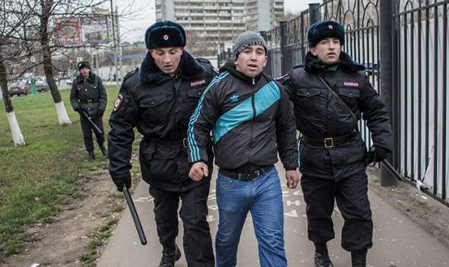

Действие уголовного закона во времени
При применении УК РФ возникает необходимость установления временных пределов его действия.
В соответствии со ст. 9 УК РФ, преступность и наказуемость деяния определяется законом, действовавшим во время совершения этого деяния.
Проблема действия уголовного закона во времени имеет несколько аспектов:
а) время принятия закона. Закон считается действующим с момента его вступления в силу после принятия, и его действие распространяется на все время, пока он не будет отменен или заменен новым законом, либо на время, указанное непосредственно в законе при его принятии;
б) вступление закона в силу. Уголовный кодекс РФ, ввиду своего объема, был введен в действие не единовременно, а более чем через полгода после своего принятия – с 1 января 1997 г.;
в) утрата законом своей юридической силы. Уголовный закон теряет свою силу в случае его отмены или замены другим законом, а также по истечении срока его действия, непосредственно указанного в нем;
г) обратная сила уголовного закона. Уголовно-правовые нормы, устраняющие преступность деяния, смягчающие наказание или ином образом улучшающие положение лица, совершившего преступление, имеют обратную силу, то есть распространяются и на события, произошедшие до вступления в юридическую силу уголовного закона. Уголовно-правовые нормы, устанавливающие преступность деяния, усиливающие наказание или иным образом ухудшающие положение лица, совершившего преступление, обратной силы не имеют, и их действие распространяется только на события, которые произошли после вступления уголовного закона в юридическую силу;
д) время совершения преступления. Временем совершения преступления признается время совершения общественно опасного действия (бездействия) независимо от времени наступления последствий (ч. 2 ст. 9 УК РФ). Преступность и наказуемость деяния определяется законом, действовавшим на время совершения преступления. Однако большое количество преступлений имеют временную протяженность, исчисляемую иногда не только месяцами, но и годами. К таким видам преступлений относятся длящиеся и продолжаемые преступления. Уголовное законодательство не содержит указаний, каким образом определять время совершения длящихся или продолжаемых преступлений (уголовно-правовые нормы вообще не содержат понятий «продолжаемое» и «длящееся» преступление). В теории и на практике эта проблема разрешается следующим образом: время совершения длящегося преступления определяется на момент начала исполнения общественно-опасного деяния не зависимо от того, когда оно будет прекращено; время совершения продолжаемого преступления связано с выполнением последнего из числа нескольких тождественных деяний, объединенных общим умыслом.
Действие уголовного закона в пространстве
Пределы действия Уголовного закона в пространстве определяют следующие принципы:
а) территориальный. Этот принцип является основополагающим: согласно ч. 1 ст. 11 УК РФ, лицо, совершившие преступления на территории Российской Федерации, привлекаются к ответственности по УК РФ.
Территорией России охватываются:
- в пределах государственной границы суша, включая острова;
- водное и воздушное пространство;
- недра;
- прибрежные воды и воздушное пространство над ними в пределах 12-мильной зоны, отсчитываемых от линии наибольшего отлива, как на материке, так и на островах, принадлежащих к России;
- континентальный шельф (примыкающая к территориальному морю до определенной глубины поверхность и недра морского дна);
- пространство исключительной экономической зоны (район, находящийся за пределами территориального моря и прилегающий к нему до 200 миль от линии наибольшего отлива);
- территории гражданских морских, речных и воздушных судов, приписанных к портам Российской Федерации и находящихся в нейтральных водах и воздушном пространстве;
- территории посольств и консульств России в иностранных государствах;
б) принцип гражданства: граждане Российской Федерации и постоянно проживающие в Российской Федерации лица без гражданства, совершившие преступление вне пределов Российской Федерации, подлежат ответственности по российскому законодательству, если совершенное ими деяние признано преступлением в государстве, на территории которого оно было совершено, и если эти лица не были осуждены в иностранном государстве. При осуждении указанных лиц наказание не может превышать верхнего предела санкции, предусмотренной законом иностранного государства, на территории которого было совершено преступление – этот тезис закрепляет положение ст. 50 Конституции РФ о том, что «никто не может быть повторно осужден за одно и то же преступление».
Если лицо, находясь на территории иностранного государства, совершает деяние, которое в этом государстве не признается преступлением, но считается таковым в России, уголовная ответственность не наступает.
Аналогично разрешается ситуация, когда лицо, совершившее деяние, которое в иностранном государстве является преступлением, но не является таковым в России;
в) реальный. Он заключается в возможности привлечения любого лица, в том числе и иностранца и лица без гражданства, к ответственности по УК РФ за преступление, совершенное за границей, если оно направлено против интересов России, а также в случаях, предусмотренных международным договором Российской Федерации, если они не были осуждены в иностранном государстве и привлекаются к уголовной ответственности на территории Российской Федерации. Под интересами России в данном случае понимаются не только государственные интересы, но и интересы личности – российских граждан;
г) универсальный. Этот принцип является исключением из общего территориального принципа действия уголовного закона в пространстве и из принципа гражданства. Универсальный принцип исходит из общности интересов всех государств мирового сообщества в борьбе с международными преступлениями и преступлениями международного характера (например, терроризм, захват заложников, угон воздушных судов и др.). В соответствии с универсальным принципом, государство обязано применить свой уголовный закон к преступнику, посягнувшему не только на интересы данной страны, но и любого другого государства, вне зависимости от того, кем и где совершено это преступление.
Действие уголовного закона по кругу лиц
ЦИТАТА
Уголовную ответственность сугубо индивидуальна, ее могут нести только физические лица.
По кругу лиц уголовный закон распространяется на:
а) всех граждан РФ, лиц без гражданства, иностранных граждан, совершивших преступление на территории РФ. Однако исключениями являются дипломатические представители (послы, атташе и др., а также члены их семей), иные граждане, пользующиеся иммунитетом (члены парламентских и правительственных делегаций, члены их семей, находящиеся на территории России с официальным визитом, и т.п.). В случае совершения ими преступления вопрос об уголовной ответственности разрешается в соответствии с нормами международного права;
б) граждан РФ и постоянно проживающих в России лиц без гражданства, совершивших преступление за границей, если они не были осуждены в иностранном государстве;
в) военнослужащих воинских частей, дислоцирующихся на территории иностранных государств, совершивших там преступления (если иное не предусмотрено международными договорами);
г) иностранных граждан и лиц без гражданства, не проживающих постоянно в Российской Федерации, совершивших преступление на территории иных государств, при условии, что они совершили преступление против интересов России; когда существуют международные договоры, при условии, если они не были осуждены в иностранном государстве и привлекаются к уголовной ответственности на территории Российской Федерации.
Согласно в ч. 1 ст. 13 УК РФ, «Граждане Российской Федерации, совершившие преступление на территории иностранного государства, не подлежат выдаче этому государству». Иначе решается вопрос в отношении иностранных граждан и лиц без гражданства. Они могут быть выданы иностранному государству, где было совершено преступление, для привлечения к уголовной ответственности или отбывания наказания. Но делается это в соответствии с международным договором Российской Федерации (ч. 2 ст. 13 УК).